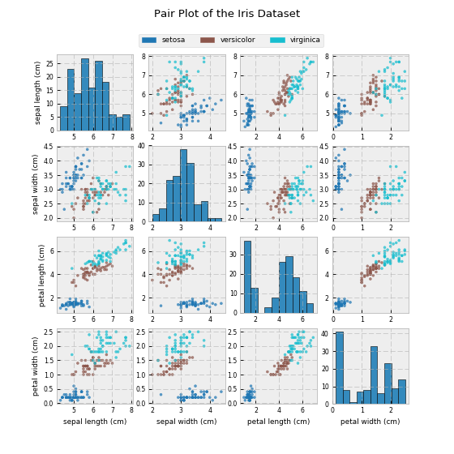

Pair Plot for task4¶
Pari Plot for Iris¶
import numpy as np
from matplotlib import style
import matplotlib.pyplot as plt
import matplotlib.patches as mpatches
from sklearn.datasets import load_iris
def task4_pplot(data, feature_names, target, target_names, title='', cmap_name='Vega10'):
"""Create a pair-plot
This function has best performance on iris dataset (3 categories and 3 features), since I only test on it.
But technically, it can draw pair plot for any dataset with reasonable amount of categories and feature.
Parameters
----------
data : numpy array
Data.
feature_names : list or numpy array with shape (1, )
Name of features.
target : numpy array
Target data.
target_names : list or numpy array with shape (1, )
Name of each target category.
title : string, optional
Default value is an empty string. It is the title shown on top of the plot.
cmap_name : string, optional
Default value is 'Vega10'. It can only take colormap which included in matplotlib.
Returns
-------
None
"""
style.use('bmh')
# Create legend
legend_list = []
cmap = plt.cm.get_cmap(cmap_name, target_names.shape[0])
for i, name in enumerate(target_names):
legend_list.append(mpatches.Patch(color=cmap(1. * i/cmap.N), label=name))
# Plotting
fig, ax = plt.subplots(data.shape[1], data.shape[1], figsize=(7, 7))
for i in range(data.shape[1]):
for j in range(data.shape[1]):
ax[i, j].tick_params(axis='both', which='major', labelsize=7)
if i == j:
ax[i, j].hist(data[:, j], edgecolor='k')
else:
ax[i, j].scatter(data[:, j], data[:, i], s=7, c=target, cmap=cmap_name, alpha=0.7)
if j == 0:
ax[i, j].set_ylabel(feature_names[i], fontsize=8)
if i == data.shape[1]-1:
ax[i, j].set_xlabel(feature_names[j], fontsize=8)
j += 1
i += 1
# Add legend, title and show plot
ax[0, 0].legend(loc=9, handles=legend_list, fontsize=8, ncol=cmap.N, bbox_to_anchor=(1.28, 1.02, 2, .3))
plt.suptitle(title)
plt.show()
iris = load_iris()
task4_pplot(iris.data, iris.feature_names, iris.target, iris.target_names, title='Pair Plot of the Iris Dataset')
{kind=link}
{kind=link}
